27. Teeset gross, Zuckerdose, 6 Tassen, Untersetzer, Milchkanne, Waermer
Sortiment
Sets für ruhige Tischmomente, Teezeremonien und hochwertige Geschenke.
27. Teeset gross, Zuckerdose, 6 Tassen, Untersetzer, Milchkanne, Waermer
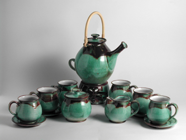
27. Teeset gross, Zuckerdose, 6 Tassen, Untersetzer, Milchkanne, Waermer
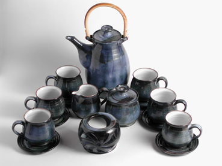
27. Teeset gross, Zuckerdose, 6 Tassen, Untersetzer, Milchkanne, Waermer

27. Teeset gross, Zuckerdose, 6 Tassen, Untersetzer, Milchkanne, Waermer

27. Teeset gross, Zuckerdose, 6 Tassen, Untersetzer, Milchkanne, Waermer
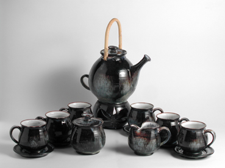
27. Teeset gross, Zuckerdose, 6 Tassen, Untersetzer, Milchkanne, Waermer
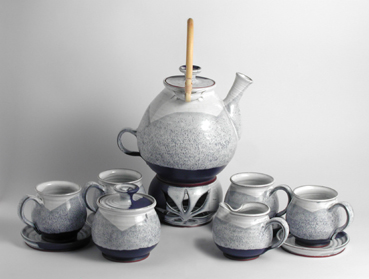
27. Teeset gross, Zuckerdose, 4 Tassen, Untersetzer, Milchkanne, Waermer
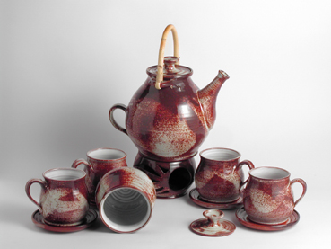
27. Teeset gross, Zuckerdose, 4 Tassen, Untersetzer, Waermer
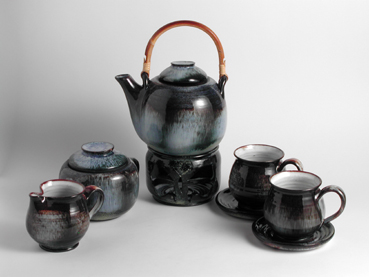
164.Kombiniertes Set mit Bambusohr, Kanne,2x Tassen, Zuckerdose, gegossen
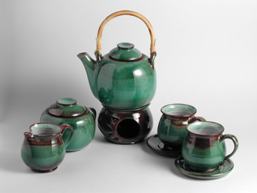
164.Kombiniertes Set mit Bambusohr, Kanne,2x Tassen, Zuckerdose, gegossen
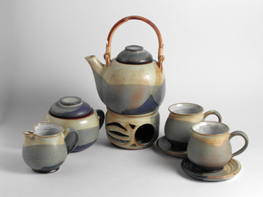
164.Kombiniertes Set mit Bambusohr, Kanne,2x Tassen, Zuckerdose, gegossen
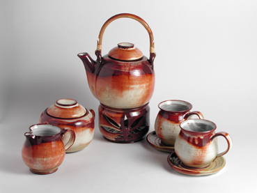
164.Kombiniertes Set mit Bambusohr, Kanne,2x Tassen, Zuckerdose, gegossen

164.Kombiniertes Set mit Bambusohr, Kanne,2x Tassen, Zuckerdose, gegossen

164.Kombiniertes Set mit Bambusohr, Kanne,2x Tassen, Zuckerdose, gegossen
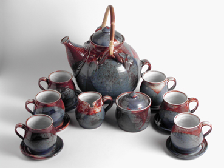
Teeset gross, Riesenkanne 3.5 l - Kugel, Zuckerdose, 6 Tassen mit Untersetzer, Milchkanne
Teeset gross, Riesenkanne 3.2 l - breit, Zuckerdose, 6 Tassen mit Untersetzer, Milchkanne

Teeset gross, Riesenkanne 2.5 l - gerade Zuckerdose, 6 Tassen mit Untersetzer

261.Teeset dem Untersatz, konisch

261.Teeset dem Untersatz, bauchfoermig

261.Teeset dem Untersatz, doppelbauchfoermig

261.Teeset dem Untersatz, Fässchen

261.Teeset dem Untersatz, Kelch
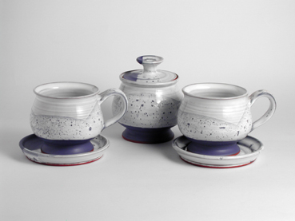
28.Teeset, Kelch, 2 Tassen mit Untersetzer und Zuckerdose
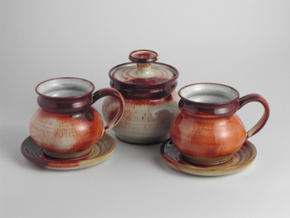
28.Teeset, doppelbauchfoermig, 2 Tassen mit Untersetzer und Zuckerdose
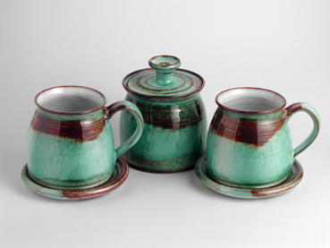
28.Teeset, Fässchen, 2 Tassen mit Untersetzer und Zuckerdose
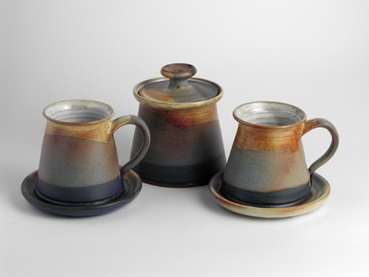
28.Teeset, konisch, 2 Tassen mit Untersetzer und Zuckerdose
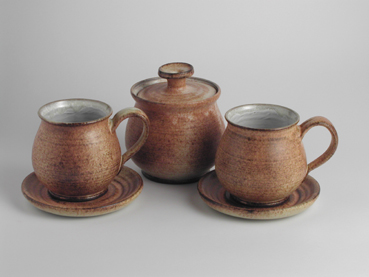
28.Teeset, bauchfoermig, 2 Tassen mit Untersetzer und Zuckerdose

128.Milchkanne - klein, niedrige

128.Milchkanne - klein, bauchfoermig

128.Milchkanne - klein, gerade

26.Kleine Zuckerdose - gedreht
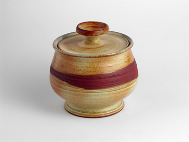
25.Zuckerdose, Kelch - gedreht
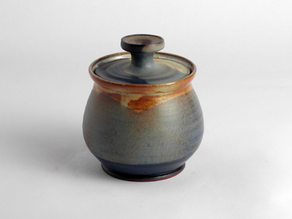
25.Zuckerdose, bauchfoermig - gedreht
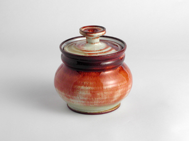
25.Zuckerdose, doppelbauchfoermig - gedreht
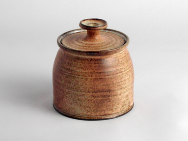
25.Zuckerdose, Fässchen - gedreht
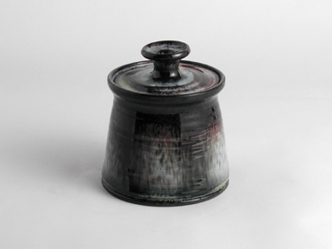
25.Zuckerdose, konisch - gedreht
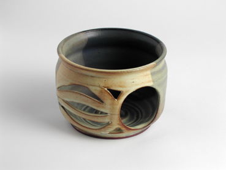
132.Waermer unter die Kanne, gegossen
132.Waermer unter die Kanne, gedreht